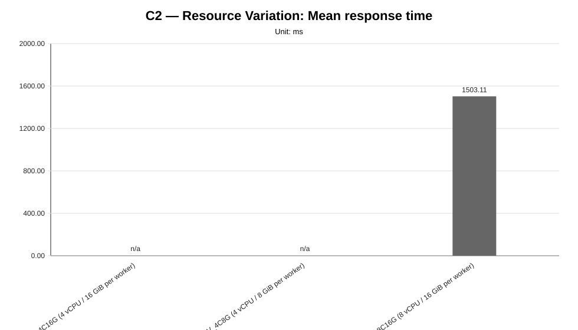
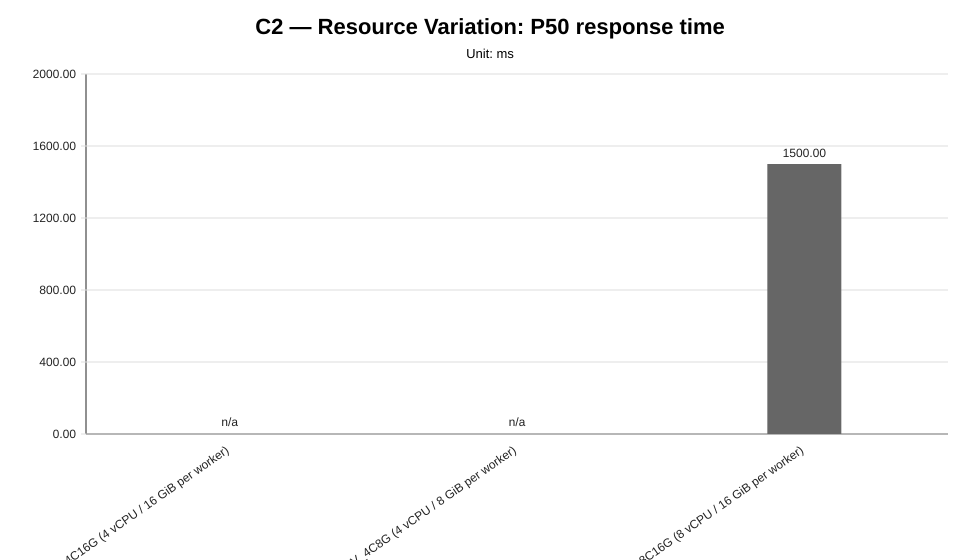
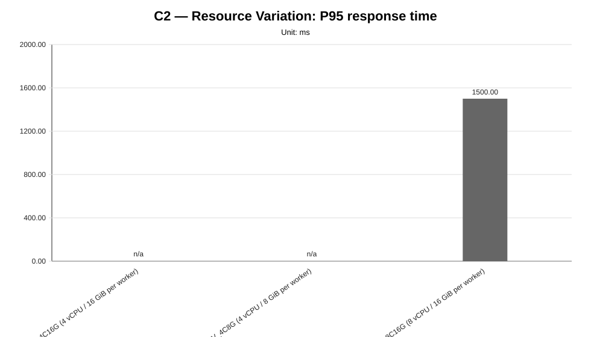
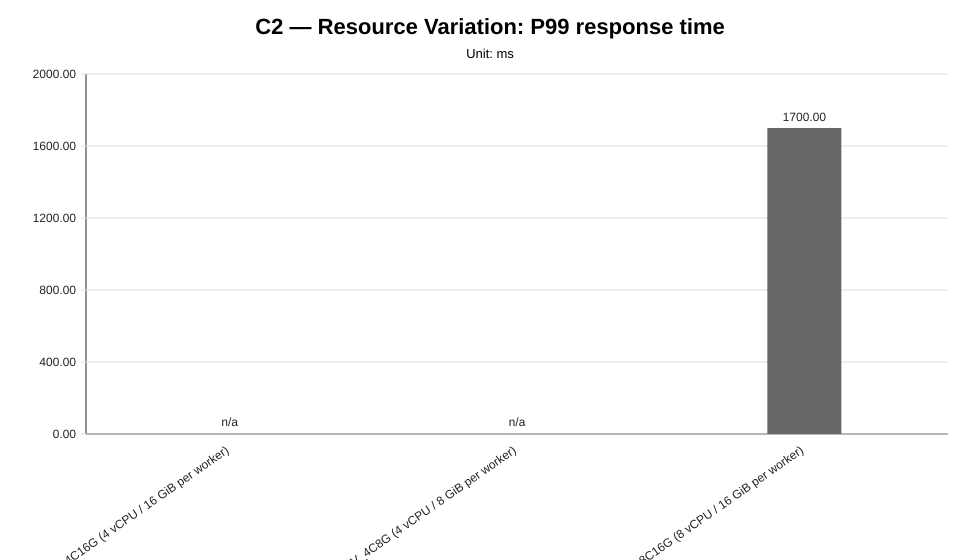
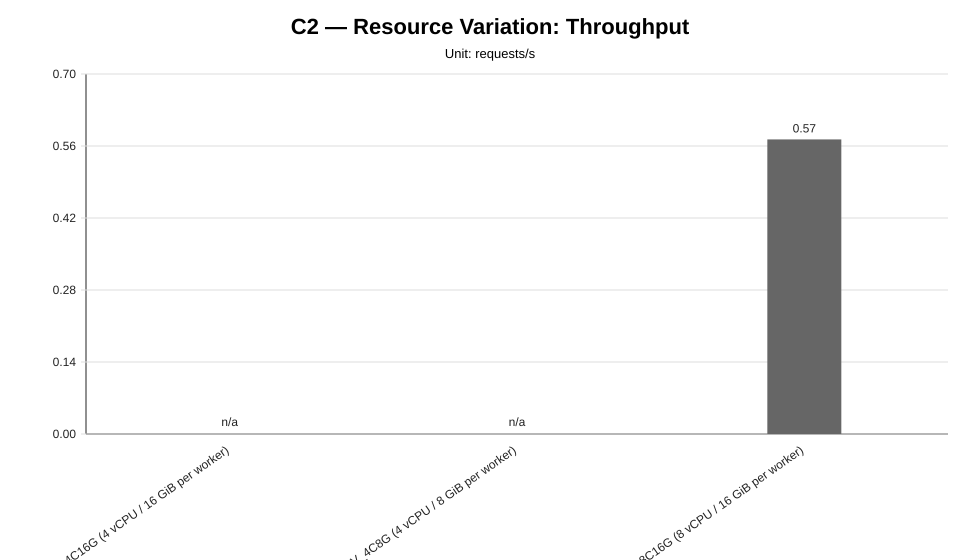
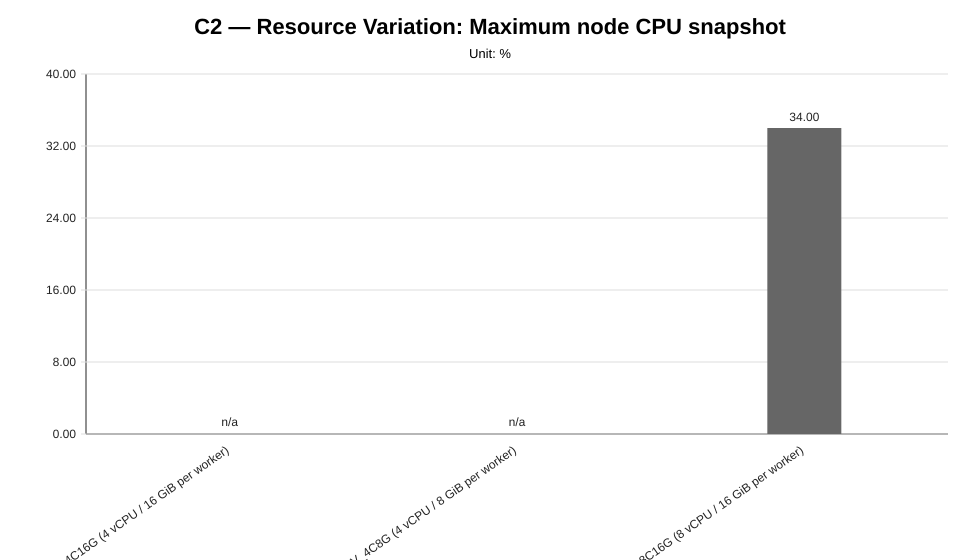
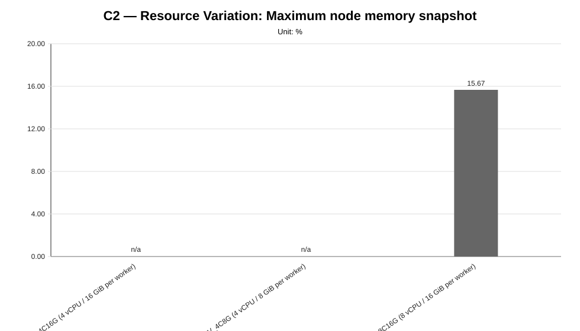
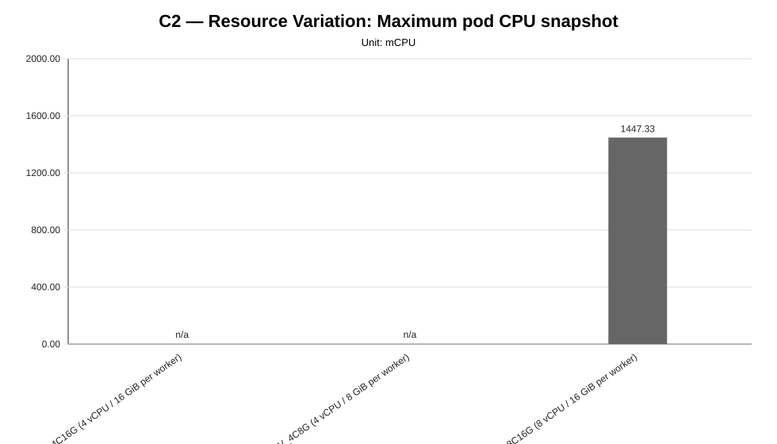
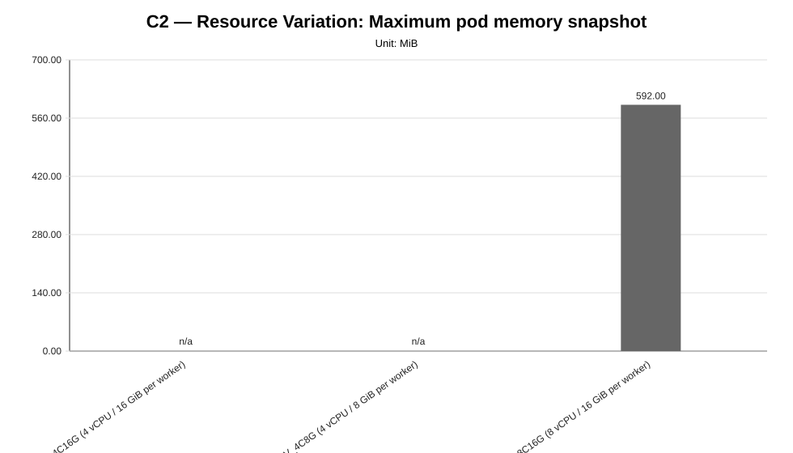

Cycle ID: C2
Reporting Profile: RP_C2_RESOURCE_VARIATION
Reporting ID: REP_C2_20260619T174611Z
Generated at UTC: 2026-06-19T17:46:38Z
This report compares worker CPU and memory variants under fixed LocalAI workload, model, worker-count and placement conditions. It is intended to expose whether resource capacity materially affects latency, throughput and cluster-side pressure.
The report combines measurement CSV data, minimal observability evidence, cluster validation outputs, application topology metadata and technical diagnosis context when those artifacts are available.
The values below describe the global baseline configuration used as a cross-cycle reference. Scenario-specific and sweep-local sections report the effective infrastructure, placement, worker count and runtime configuration used by each scenario. Percentage deltas are computed against the family-local reference scenario when one is defined for the sweep.
| Dimension | Reference value |
|---|---|
| Baseline ID | B1 |
| Model | llama-3.2-1b-instruct:q4_k_m |
| Worker count | 2 |
| Placement | colocated_genai_pb_worker_02 |
| Workload | users=2, spawnRate=1, runTime=2m |
| Prompt | Reply with only READY. |
| Request timeout | 120 s |
| Infrastructure profile | INFRA_C1_1CP_2W_8C16G |
| Placement profile | PL_COLOCATED |
The scenarios below are the sweep-local references used to interpret percentage deltas within each family. They may differ from the cross-cycle baseline when a campaign intentionally varies infrastructure, placement, latency or tenancy.
| Sweep | Reference scenario | Description | Status | Varied dimension |
|---|---|---|---|---|
| Resource Variation | RV_8C16G | RV_8C16G (8 vCPU / 16 GiB per worker) | measured | worker CPU and memory capacity |
| Layer | Primary use | Source |
|---|---|---|
| Measurement CSV | Quantitative charts and scenario summary metrics | {"resource-variation": "results/experimental-cycles/C2/benchmark/resource-variation"} |
| Technical diagnosis | Interpretation, family judgments, findings, unsupported-scenario context | results/experimental-cycles/C2/diagnosis/analysis_diagnosis_all_NA_20260619T174638Z_diagnosis.json |
| Scenario configuration | Fixed/varied dimensions and scenario labels | config/scenarios/** |
| Cluster-side artifacts | CPU/memory snapshots, pod placement and event evidence | minimal observability and cluster capture artifacts |
| Reporting output | Current generated report package | results/experimental-cycles/C2/reporting |
This reporting profile uses variant-scoped infrastructure: infrastructure profiles are attached to individual scenarios rather than to one fixed cycle-level cluster shape.
| Scenario | Family | Infrastructure profile | Infrastructure profile path | Provider | Provider binding | Worker nodes | Worker vCPU/node | Worker memory/node | Lifecycle mode |
|---|---|---|---|---|---|---|---|---|---|
RV_4C16G | resource-variation | INFRA_C2_1CP_2W_4C16G | config/infrastructure/profiles/INFRA_C2_1CP_2W_4C16G.json | proxmox-k3s | BINDING_INFRA_C2_1CP_2W_4C16G_PROXMOX_K3S | 2 | 4 vCPU | 16 GiB | ephemeral |
RV_4C8G | resource-variation | INFRA_C2_1CP_2W_4C8G | config/infrastructure/profiles/INFRA_C2_1CP_2W_4C8G.json | proxmox-k3s | BINDING_INFRA_C2_1CP_2W_4C8G_PROXMOX_K3S | 2 | 4 vCPU | 8 GiB | ephemeral |
RV_8C16G | resource-variation | INFRA_C2_1CP_2W_8C16G | config/infrastructure/profiles/INFRA_C2_1CP_2W_8C16G.json | proxmox-k3s | BINDING_INFRA_C2_1CP_2W_8C16G_PROXMOX_K3S | 2 | 8 vCPU | 16 GiB | ephemeral |
This campaign may resolve provider configuration at scenario or variant level. The table below exposes provider bindings and concrete configuration paths per scenario whenever available.
| Scenario | Family | Provider | Provider binding | Provider binding path | Example config | Local config | Kubeconfig |
|---|---|---|---|---|---|---|---|
RV_4C16G | resource-variation | proxmox-k3s | BINDING_INFRA_C2_1CP_2W_4C16G_PROXMOX_K3S | config/infrastructure/providers/proxmox-k3s/bindings/BINDING_INFRA_C2_1CP_2W_4C16G_PROXMOX_K3S.json | config/infrastructure/providers/proxmox-k3s/examples/cluster.c2-1cp-2w-4c16g.example.yaml | config/infrastructure/providers/proxmox-k3s/local/cluster.c2-1cp-2w-4c16g.local.yaml | config/cluster-access/generated/proxmox-k3s/c2-1cp-2w-4c16g/kubeconfig |
RV_4C8G | resource-variation | proxmox-k3s | BINDING_INFRA_C2_1CP_2W_4C8G_PROXMOX_K3S | config/infrastructure/providers/proxmox-k3s/bindings/BINDING_INFRA_C2_1CP_2W_4C8G_PROXMOX_K3S.json | config/infrastructure/providers/proxmox-k3s/examples/cluster.c2-1cp-2w-4c8g.example.yaml | config/infrastructure/providers/proxmox-k3s/local/cluster.c2-1cp-2w-4c8g.local.yaml | config/cluster-access/generated/proxmox-k3s/c2-1cp-2w-4c8g/kubeconfig |
RV_8C16G | resource-variation | proxmox-k3s | BINDING_INFRA_C2_1CP_2W_8C16G_PROXMOX_K3S | config/infrastructure/providers/proxmox-k3s/bindings/BINDING_INFRA_C2_1CP_2W_8C16G_PROXMOX_K3S.json | config/infrastructure/providers/proxmox-k3s/examples/cluster.c2-1cp-2w-8c16g.example.yaml | config/infrastructure/providers/proxmox-k3s/local/cluster.c2-1cp-2w-8c16g.local.yaml | config/cluster-access/generated/proxmox-k3s/c2-1cp-2w-8c16g/kubeconfig |
| Item | Value |
|---|---|
| Validation profile | CV_PROVIDER_BACKED_VALIDATION_TEMPLATE |
| Profile file | config/cluster-validation/templates/CV_PROVIDER_BACKED_VALIDATION_TEMPLATE.json |
| Latest manifest | variant-scoped validation manifests (3 available) |
| Current status | variant-scoped validation available (3/3 validated) |
| Variant validation statuses | validated=3 |
| Latest raw validation | variant-scoped validation evidence is recorded in the campaign execution manifest and generated runtime profiles under results/experimental-cycles/C2/execution/generated-runtime-configs |
| Accepted provisioning statuses | completed |
| Required kubeconfig status | verified |
| Artifact root | results/experimental-cycles/C2/execution/generated-runtime-configs |
This table links each scenario to the runtime-generated profiles used for precheck, application deployment and minimal observability evidence.
| Scenario | Family | Precheck profile | Precheck profile path | Application deployment profile | Application deployment profile path | Minimal observability profile | Minimal observability profile path | Cluster validation evidence |
|---|---|---|---|---|---|---|---|---|
RV_4C16G | resource-variation | TC_C2_RV_4C16G | results/experimental-cycles/C2/execution/generated-runtime-configs/RV_4C16G/TC_RV_4C16G.json | AD_C2_RV_4C16G | results/experimental-cycles/C2/execution/generated-runtime-configs/RV_4C16G/AD_RV_4C16G.json | MO_C2_RV_4C16G | results/experimental-cycles/C2/execution/generated-runtime-configs/RV_4C16G/MO_RV_4C16G.json | results/experimental-cycles/C2/variants/RV_4C16G/infrastructure/validation/latest-cluster-validation-manifest.json (validated) |
RV_4C8G | resource-variation | TC_C2_RV_4C8G | results/experimental-cycles/C2/execution/generated-runtime-configs/RV_4C8G/TC_RV_4C8G.json | AD_C2_RV_4C8G | results/experimental-cycles/C2/execution/generated-runtime-configs/RV_4C8G/AD_RV_4C8G.json | MO_C2_RV_4C8G | results/experimental-cycles/C2/execution/generated-runtime-configs/RV_4C8G/MO_RV_4C8G.json | results/experimental-cycles/C2/variants/RV_4C8G/infrastructure/validation/latest-cluster-validation-manifest.json (validated) |
RV_8C16G | resource-variation | TC_C2_RV_8C16G | results/experimental-cycles/C2/execution/generated-runtime-configs/RV_8C16G/TC_RV_8C16G.json | AD_C2_RV_8C16G | results/experimental-cycles/C2/execution/generated-runtime-configs/RV_8C16G/AD_RV_8C16G.json | MO_C2_RV_8C16G | results/experimental-cycles/C2/execution/generated-runtime-configs/RV_8C16G/MO_RV_8C16G.json | results/experimental-cycles/C2/variants/RV_8C16G/infrastructure/validation/latest-cluster-validation-manifest.json (validated) |
This campaign may vary placement, tenancy, latency profile or generated deployment profiles at scenario level. The table below exposes the scenario-level application topology used by each configured variant.
| Scenario | Family | Placement profile | Placement type | Topology dir | Server manifest | Worker count | Active RPC workers | Expected server node | Expected worker nodes | Latency profile | Tenancy profile | Generated deployment profile |
|---|---|---|---|---|---|---|---|---|---|---|---|---|
RV_4C16G | resource-variation | PL_COLOCATED | colocated_genai_pb_worker_02 | infra/k8s/compositions/topology/colocated-genai-pb-worker-02-w2 | infra/k8s/compositions/server/models/m1-provider-backed | 2 | localai-rpc-a, localai-rpc-b | genai-pb-worker-02 | localai-rpc-a=genai-pb-worker-02, localai-rpc-b=genai-pb-worker-02 | not_applicable | not_declared | results/experimental-cycles/C2/execution/generated-runtime-configs/RV_4C16G/AD_RV_4C16G.json |
RV_4C8G | resource-variation | PL_COLOCATED | colocated_genai_pb_worker_02 | infra/k8s/compositions/topology/colocated-genai-pb-worker-02-w2 | infra/k8s/compositions/server/models/m1-provider-backed | 2 | localai-rpc-a, localai-rpc-b | genai-pb-worker-02 | localai-rpc-a=genai-pb-worker-02, localai-rpc-b=genai-pb-worker-02 | not_applicable | not_declared | results/experimental-cycles/C2/execution/generated-runtime-configs/RV_4C8G/AD_RV_4C8G.json |
RV_8C16G | resource-variation | PL_COLOCATED | colocated_genai_pb_worker_02 | infra/k8s/compositions/topology/colocated-genai-pb-worker-02-w2 | infra/k8s/compositions/server/models/m1-provider-backed | 2 | localai-rpc-a, localai-rpc-b | genai-pb-worker-02 | localai-rpc-a=genai-pb-worker-02, localai-rpc-b=genai-pb-worker-02 | not_applicable | not_declared | results/experimental-cycles/C2/execution/generated-runtime-configs/RV_8C16G/AD_RV_8C16G.json |
The following table summarizes the currently available measurement and constraint evidence for all configured reporting families.
| Family | Scenario | Status | Samples | Mean ms | P95 ms | RPS | Unsupported evidence |
|---|---|---|---|---|---|---|---|
| resource-variation | RV_4C16G | unsupported_under_current_constraints | 0 | NA | NA | NA | application_not_ready,failed_scheduling,insufficient_cpu,latency_injection,localai_deployment,no_preemption_victims_found,node_affinity_selector_mismatch,pending_pod,preemption_not_helpful,rollout_timeout |
| resource-variation | RV_4C8G | unsupported_under_current_constraints | 0 | NA | NA | NA | application_not_ready,failed_scheduling,insufficient_memory,latency_injection,localai_deployment,no_preemption_victims_found,node_affinity_selector_mismatch,pending_pod,preemption_not_helpful,rollout_timeout |
| resource-variation | RV_8C16G | measured | 3 | 1503.11 | 1500.00 | 0.5728 | NA |
The reporting generator first uses minimal observability metrics when available; missing values are filled from scenario-summary aggregates derived from benchmark CSV files and cluster-capture artifacts whenever possible. Values marked as not_available were not derivable from the available artifact set and are intentionally distinguished from measured zero values.
| Metric | Value | Source |
|---|---|---|
| request_count | 67.6667 | scenario summary aggregation fallback |
| success_rate_percent | 100.0 | scenario summary aggregation fallback |
| failure_count | 0 | scenario summary aggregation fallback |
| mean_response_time_ms | 1503.1079 | scenario summary aggregation fallback |
| p50_response_time_ms | 1500.0 | scenario summary aggregation fallback |
| p95_response_time_ms | 1500.0 | scenario summary aggregation fallback |
| p99_response_time_ms | 1700.0 | scenario summary aggregation fallback |
| throughput_rps | 0.5728 | scenario summary aggregation fallback |
| max_node_cpu_percent | 34.0 | scenario summary aggregation fallback |
| max_node_memory_percent | 15.6667 | scenario summary aggregation fallback |
| max_pod_cpu_millicores | 1447.3333 | scenario summary aggregation fallback |
| max_pod_memory_mib | 592.0 | scenario summary aggregation fallback |
| pod_restart_count | 0 | scenario summary aggregation fallback |
| pending_pods_count | 0 | scenario summary aggregation fallback |
| failed_pods_count | 0 | scenario summary aggregation fallback |
| not_ready_pods_count | 0 | scenario summary aggregation fallback |
| kubernetes_events_count | 24 | scenario summary aggregation fallback |
| kubernetes_warning_events_count | 0 | scenario summary aggregation fallback |
| Family | Scenario | Status | Evidence | Source |
|---|---|---|---|---|
| resource-variation | RV_4C16G | unsupported_under_current_constraints | application_not_ready, failed_scheduling, insufficient_cpu, latency_injection, localai_deployment, no_preemption_victims_found, node_affinity_selector_mismatch, pending_pod, ... (+2) | results/experimental-cycles/C2/benchmark/resource-variation/RV_4C16G_official_locked/RV_4C16G_runA_unsupported.json, results/experimental-cycles/C2/benchmark/resource-variation/RV_4C16G_official_locked/RV_4C16G_runB_unsupported.json, results/experimental-cycles/C2/benchmark/resource-variation/RV_4C16G_official_locked/RV_4C16G_runC_unsupported.json |
| resource-variation | RV_4C8G | unsupported_under_current_constraints | application_not_ready, failed_scheduling, insufficient_memory, latency_injection, localai_deployment, no_preemption_victims_found, node_affinity_selector_mismatch, pending_pod, ... (+2) | results/experimental-cycles/C2/benchmark/resource-variation/RV_4C8G_official_locked/RV_4C8G_runA_unsupported.json, results/experimental-cycles/C2/benchmark/resource-variation/RV_4C8G_official_locked/RV_4C8G_runB_unsupported.json, results/experimental-cycles/C2/benchmark/resource-variation/RV_4C8G_official_locked/RV_4C8G_runC_unsupported.json |
| Family | Finding | Status | Confidence | Implication |
|---|---|---|---|---|
| resource-variation | The resource-variation family provides deployability-boundary evidence, but not yet a full latency/throughput comparison. | capacity_boundary_signal_available | medium | At least two measured resource shapes are still required for a robust performance comparison; however, the campaign already identifies which lower resource shapes cannot host the fixed LocalAI topology under the current constraints. |
| resource-variation | The resource-variation campaign identifies a deployability boundary under fixed application-level conditions. | NA | high | The campaign should be read as capacity-feasibility evidence: lower worker-node shapes are not benchmark-ready under the fixed co-located topology and current LocalAI resource requests, while the reference shape is measurable. |
| resource-variation | Unsupported resource-variation variants expose Kubernetes scheduler resource constraints. | NA | high | The unsupported variants provide concrete evidence about CPU and memory feasibility limits and should not be treated as ordinary benchmark failures. |
| baseline | Minimum end-to-end validation is available as a functional reliability baseline. | NA | high | The benchmark pipeline starts from a verified functional baseline rather than from a purely theoretical setup. |
The global report below provides the stakeholder-facing overview. Each sweep also has a dedicated report for focused inspection of one varied dimension.
| Sweep | Dedicated HTML report | Execution status | Coverage | Varied dimension |
|---|---|---|---|---|
| Resource Variation | resource-variation | partially_measured | measured=1, unsupported=2, missing=0 | worker CPU and memory capacity |
| Family | Scenarios | Observed | Measured | Unsupported | Samples |
|---|---|---|---|---|---|
| resource-variation | 3 | 3 | 1 | 2 | 3 |
Execution status: partially_measured
Execution note: At least one configured scenario has measured benchmark samples, while other scenarios are missing or unsupported.
Varied dimension: worker CPU and memory capacity
Fixed dimensions: model=M1, workload=WL2, LocalAI worker count=W2, placement=PL_COLOCATED, request payload.
Reference scenario within the sweep: RV_8C16G
| Scenario count | Measured | Unsupported | Missing |
|---|---|---|---|
| 3 | 1 | 2 | 0 |
This table is derived from resolved scenario metadata. A parameter is marked as controlled only when it has the same effective value across all scenarios in the sweep.
| Parameter | Resolved value | Interpretation |
|---|---|---|
| Model | llama-3.2-1b-instruct:q4_k_m | controlled |
| Worker count | 2 | controlled |
| Placement | colocated_genai_pb_worker_02 | controlled |
| Workload | users=2, spawnRate=1, runTime=2m | controlled |
| Topology | infra/k8s/compositions/topology/colocated-genai-pb-worker-02-w2 | controlled |
| Server manifest | infra/k8s/compositions/server/models/m1-provider-backed | controlled |
| Prompt | Reply with only READY. | controlled |
| Temperature | 0.1 | controlled |
| Request timeout (s) | 120 | controlled |
| Scenario | Status | Varied value (worker CPU and memory capacity) | Model | Worker count | Placement | Workload | Timeout (s) |
|---|---|---|---|---|---|---|---|
RV_4C16G | unsupported_under_current_constraints | 4 vCPU / 16 GiB per worker | llama-3.2-1b-instruct:q4_k_m | 2 | colocated_genai_pb_worker_02 | users=2, spawnRate=1, runTime=2m | 120 |
RV_4C8G | unsupported_under_current_constraints | 4 vCPU / 8 GiB per worker | llama-3.2-1b-instruct:q4_k_m | 2 | colocated_genai_pb_worker_02 | users=2, spawnRate=1, runTime=2m | 120 |
RV_8C16G | measured | 8 vCPU / 16 GiB per worker | llama-3.2-1b-instruct:q4_k_m | 2 | colocated_genai_pb_worker_02 | users=2, spawnRate=1, runTime=2m | 120 |
This compact table reports the core indicators used to read the sweep at a glance. Detailed percentiles, deltas and resource snapshots are reported in the following extended table.
| Scenario | Description | Status | Sample count | Mean response time (ms) | P95 response time (ms) | Throughput (requests/s) | Unsupported evidence |
|---|---|---|---|---|---|---|---|
RV_4C16G | RV_4C16G (4 vCPU / 16 GiB per worker) | unsupported_under_current_constraints | 0 | n/a | n/a | n/a | application_not_ready, failed_scheduling, insufficient_cpu, latency_injection, localai_deployment, no_preemption_victims_found, node_affinity_selector_mismatch, pending_pod, preemption_not_helpful, rollout_timeout |
RV_4C8G | RV_4C8G (4 vCPU / 8 GiB per worker) | unsupported_under_current_constraints | 0 | n/a | n/a | n/a | application_not_ready, failed_scheduling, insufficient_memory, latency_injection, localai_deployment, no_preemption_victims_found, node_affinity_selector_mismatch, pending_pod, preemption_not_helpful, rollout_timeout |
RV_8C16G | RV_8C16G (8 vCPU / 16 GiB per worker) | measured | 3 | 1503.11 | 1500.00 | 0.5728 |
This secondary table keeps the additional metrics aligned with the technical diagnosis while avoiding an excessively wide primary summary table.
| Scenario | P50 response time (ms) | P99 response time (ms) | Mean response time delta (%) | P95 response time delta (%) | Throughput delta (%) | Max node CPU snapshot (%) | Max node memory snapshot (%) | Max pod CPU snapshot (mCPU) | Max pod memory snapshot (MiB) |
|---|---|---|---|---|---|---|---|---|---|
RV_4C16G | n/a | n/a | n/a | n/a | n/a | n/a | n/a | n/a | n/a |
RV_4C8G | n/a | n/a | n/a | n/a | n/a | n/a | n/a | n/a | n/a |
RV_8C16G | 1500.00 | 1700.00 | 0.00 | 0.00 | 0.00 | 34.00 | 15.67 | 1447.33 | 592.00 |
This table makes the resource-capacity dimension explicit. Model, workload, LocalAI worker count and placement are kept fixed while worker-node CPU and memory capacity change; unsupported variants are reported in the same context to preserve capacity-boundary evidence without introducing a separate asymmetric section.
| Scenario | Worker nodes | Worker-node shape | Total worker CPU | Total worker memory | Reference shape | Execution status | Unsupported reason |
|---|---|---|---|---|---|---|---|
RV_4C16G | 2 | 4 vCPU / 16 GiB | 8 vCPU | 32 GiB | no | unsupported_under_current_constraints | localai_deployment_not_ready, localai_deployment_not_ready, localai_deployment_not_ready |
RV_4C8G | 2 | 4 vCPU / 8 GiB | 8 vCPU | 16 GiB | no | unsupported_under_current_constraints | localai_deployment_not_ready, localai_deployment_not_ready, localai_deployment_not_ready |
RV_8C16G | 2 | 8 vCPU / 16 GiB | 16 vCPU | 32 GiB | yes | measured | none |
capacity_boundary_signal_available, confidence: medium).high).high).








not_executed sweep means that neither measurement CSV files nor unsupported-scenario evidence were found for any configured scenario in that family.Only resource capacity is varied in this campaign; application-level differences must not be inferred from the variant labels.
Unsupported variants remain meaningful evidence when they expose provider, scheduling or capacity constraints.
When only one resource variant is measured, the report must present C2 as capacity-boundary evidence rather than as a completed performance-sensitivity comparison.